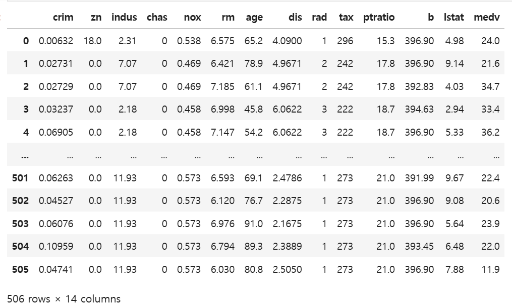

15장 Ridge 및 Lasso 회귀#
1. 데이터 업로드#

Gemini 설명#
1. 데이터셋 개요#
업로드된 BostonHousing.csv 파일은 보스턴 인근의 주택 가격 및 관련 사회경제적 지표를 담고 있는 데이터셋이다. 이 데이터는 통계 분석 및 머신러닝 모델링에서 널리 사용되는 데이터셋으로, 총 506개의 행(관측치)과 14개의 열(변수)로 구성되어 있다.
각 변수에 대한 설명은 다음과 같다.
crim: 자치시(town)별 1인당 범죄율
zn: 25,000 평방피트를 초과하는 거주 지역의 비율
indus: 자치시별 비소매 상업 지역이 차지하는 면적 비율
chas: 찰스강(Charles River)에 대한 더미 변수 (강의 경계에 위치하면 1, 아니면 0)
nox: 일산화질소 농도 (1,000만 분의 1 단위)
rm: 주택당 평균 방의 개수
age: 1940년 이전에 건축된 소유 주택의 비율
dis: 보스턴의 5개 고용 센터까지의 가중 거리
rad: 방사형 고속도로까지의 접근성 지수
tax: 당 재산세율
ptratio: 자치시별 학생/교사 비율
b: (여기서 는 자치시별 흑인 비율을 의미함)
lstat: 하위 계층 인구의 비율 ()
medv: 본인 소유 주택 가격의 중앙값 (단위: )
이 데이터셋은 주로 주택 가격인 medv를 종속 변수(target)로 설정하고, 나머지 13개의 변수를 독립 변수(feature)로 사용하여 가격을 예측하거나 변수 간의 상관관계를 분석하는 데 활용된다.
2. Ridge 회귀#
Gemini 분석#
1. Ridge 회귀의 이해#
Ridge 회귀는 선형 회귀 모형의 과적합(overfitting)을 방지하기 위해 계수의 크기를 제한하는 정규화(regularization) 기법이다. 일반적인 최소제곱법(OLS)은 잔차 제곱합을 최소화하는 과정에서 계수 값이 지나치게 커질 수 있는데, Ridge 회귀는 목적 함수에 계수의 제곱합(\(\ell_2\) 페널티)을 추가하여 이를 제어한다.
Ridge 회귀의 목적 함수는 다음과 같다.
이 식의 첫 번째 항은 모델의 예측값과 실제값 사이의 오차를 나타내는 잔차 제곱합(residual sum of squares, RSS)이다. 두 번째 항은 계수의 제곱합에 하이퍼파라미터인 \(\lambda\)(또는 alpha)를 곱한 페널티 항이다.
\(\lambda\)는 정규화 강도를 조절하는 역할을 하며, 이 값이 클수록 계수 추정치를 0에 가깝게 수축시켜 모델을 더 단순하게 만든다. 결과적으로 Ridge 회귀는 오차를 줄이려는 노력과 계수의 크기를 작게 유지하려는 노력 사이의 균형을 찾아 모델의 일반화 성능을 높인다.
이 과정에서 모델의 분산을 줄이는 대신 약간의 정규화 편향(regularization bias) 이 발생할 수 있으나, 전체적인 예측 정확도(MSE)를 개선하는 효과가 있다. 특히 변수 간 상관관계가 높은 다중공선성 문제가 있을 때 유용하다.
2. 추정 절차#
분석은 다음의 4단계로 진행한다.
데이터 표준화: 변수들의 단위가 다르면 페널티가 불공정하게 적용되므로, 모든 독립 변수의 평균을 0, 표준편차를 1로 변환한다.
하이퍼파라미터 튜닝: 모델의 복잡도를 결정하는 \(\lambda\) (또는 alpha) 값을 찾기 위해 교차 검증(cross-validation)을 수행한다. 본 분석에서는 5-겹 교차 검증을 통해 가장 낮은 오차를 보이는 최적의 \(\lambda \approx 2.477\)을 선택하였다.
모델 학습: 선택된 \(\lambda\)를 사용하여 전체 데이터에 대해 회귀 계수를 추정한다.
통계량 산출: 추정된 계수의 신뢰성을 평가하기 위해 표준오차(standard error), t-값, p-값을 계산한다.
3. Ridge 회귀 추정 결과#
다음은 보스턴 주택 가격 데이터를 Ridge 회귀로 분석한 결과이다. (결정계수 \(R^2 \approx 0.668\))
Feature |
Coefficient |
Std.Error |
t-value |
p-value |
|---|---|---|---|---|
crim (범죄율) |
-0.6589 |
0.2089 |
-3.1534 |
0.0017 |
zn (거주지 비율) |
0.5906 |
0.2121 |
2.7840 |
0.0056 |
indus (상업지역 비율) |
-0.3943 |
0.2291 |
-1.7208 |
0.0859 |
chas (찰스강 인접) |
0.7411 |
0.1858 |
3.9890 |
0.0001 |
nox (일산화질소) |
-0.9567 |
0.2299 |
-4.1622 |
0.0000 |
rm (방의 개수) |
2.7882 |
0.2019 |
13.8081 |
0.0000 |
age (노후 주택) |
-0.1685 |
0.2245 |
-0.7504 |
0.4534 |
dis (고용센터 거리) |
-1.7412 |
0.2270 |
-7.6692 |
0.0000 |
rad (고속도로 접근성) |
0.7420 |
0.2086 |
3.5565 |
0.0004 |
tax (재산세율) |
-0.6262 |
0.2064 |
-3.0339 |
0.0025 |
ptratio (교사 비율) |
-1.6775 |
0.2020 |
-8.3043 |
0.0000 |
b (흑인 비율 지수) |
0.7840 |
0.1983 |
3.9527 |
0.0001 |
lstat (하위 계층 비율) |
-2.9976 |
0.2229 |
-13.4476 |
0.0000 |
4. 결과 설명#
회귀 계수(Coefficient): 해당 변수가 주택 가격에 미치는 영향의 방향과 크기를 나타낸다. 예를 들어
rm(방의 개수)의 계수는 2.7882로, 방이 많을수록 주택 가격이 상승함을 의미한다. 반면lstat은 -2.9976으로 주택 가격에 가장 큰 음(-)의 영향을 미친다.표준오차(Std.Error): 계수 추정치의 정밀도를 의미한다. 값이 작을수록 추정치가 안정적이다.
t-값(t-value): 계수를 표준오차로 나눈 값으로, 절댓값이 클수록 해당 변수의 영향력이 통계적으로 뚜렷함을 의미한다.
p-값(p-value): 해당 변수가 주택 가격에 미치는 영향이 우연일 확률이다. 일반적으로 0.05 미만이면 통계적으로 유의미하다고 판단한다. 본 모델에서는
age와indus를 제외한 대부분의 변수가 주택 가격을 결정하는 유의미한 요인으로 분석되었다.
3. 과적합 방지 위해 계수 크기를 제한?#
Gemini 설명#
과적합(overfitting)을 방지하기 위해 계수의 크기를 제한하는 것은 모델이 학습 데이터의 ‘노이즈(noise)’ 에 과도하게 반응하지 않도록 ‘모델의 유연성(flexibility)’ 을 억제하는 것을 의미한다.
1. 계수가 크다는 것의 의미: 높은 민감도#
회귀 모델에서 계수 \(\beta\)는 독립 변수 \(x\)가 1단위 변할 때 종속 변수 \(y\)가 변하는 정도를 나타낸다.
계수가 매우 크다면?: \(x\)가 아주 조금만 변해도 \(y\)가 급격하게 변한다. 만약 학습 데이터에 포함된 특정 관측치가 측정 오류나 우연에 의한 노이즈를 갖고 있다면, 모델은 그 노이즈를 맞추기 위해 계수를 비정상적으로 키우게 된다.
결과: 모델이 데이터의 일반적인 패턴이 아니라 개별 데이터 포인트의 ‘변덕’을 따라가게 되어, 새로운 데이터(test data)가 들어왔을 때 예측력이 급격히 떨어진다.
2. 계수 제한의 기하학적 직관: 곡선을 직선으로#
데이터 포인트들을 통과하는 함수를 그릴 때,
제한이 없을 때: 모델은 모든 점을 완벽하게 통과하기 위해 구불구불한 복잡한 곡선을 그린다. 이 구불구불한 정도가 바로 계수의 크기와 연결된다.
계수를 제한할 때: Ridge 회귀와 같이 계수의 제곱합(\(\ell_2\) norm)에 페널티를 주면, 모델은 계수를 최대한 작게 유지하려 노력한다. 이는 구불구불한 곡선을 최대한 완만하게, 혹은 직선에 가깝게 펴는 효과를 준다.
의미: “데이터의 세세한 굴곡(노이즈)은 무시하고, 전반적인 흐름(신호)만 따라가겠다”는 선언과 같다.
3. 정규화와 편향-분산 트레이드오프 (Bias-Variance Tradeoff)#
계수를 제한하는 행위는 통계학적으로 분산(variance)을 줄이고 편향(bias)을 약간 늘리는 전략이다.
분산 감소: 모델이 데이터의 작은 변화에 덜 민감해지므로, 어떤 학습 데이터를 넣더라도 비슷한 추정치를 얻을 수 있다. 즉, 모델이 안정적이 된다.
편향 증가: 계수를 강제로 줄였기 때문에, 모델이 학습 데이터의 정답을 완벽하게 맞추지 못하게 된다. 이를 정규화 편향(regularization bias) 이라고 한다.
결국, 계수를 제한하는 이유는 “약간의 정확도 손실(편향 증가)을 감수하더라도, 실전에서의 예측 안정성(분산 감소)을 획기적으로 높이기 위함” 이다.
4. 수학적 표현#
Ridge 회귀의 목적 함수를 보면 계수 제한의 의미가 더 명확해진다.
모델은 이 두 항의 합을 최소화해야 한다. \(\lambda\)가 커질수록 모델은 오차를 조금 더 허용하더라도 계수(\(\beta\))를 작게 유지하는 데 집중하게 된다.
요약하자면, 계수 제한은 모델이 데이터의 사소한 특징에 일희일비하지 않고 묵직하게 일반적인 규칙을 배우도록 만드는 장치이다.
혹시 위에서 언급한 lstat이나 rm 변수처럼 실제 데이터 분석 결과에서 계수 제한이 어떻게 모델 성능을 높였는지, Lasso(라쏘)와 같은 다른 방식과의 차이점이 궁금한가?
4. 교차검증에 의한 하이퍼파라미터 튜닝#
Gemini 설명#
하이퍼파라미터 튜닝: 5겹 교차 검증(5-fold Cross-Validation) 절차#
Ridge 회귀에서 가장 중요한 과제 중 하나는 정규화의 강도를 조절하는 하이퍼파라미터인 \(\lambda\)(또는 alpha) 값을 결정하는 것이다. \(\lambda\)가 너무 작으면 과적합(overfitting)이 발생하고, 너무 크면 모델이 단순해져 과소적합(underfitting)이 발생한다. 이를 해결하기 위해 사용하는 5겹 교차 검증의 단계적 절차는 다음과 같다.
1단계: 후보 \(\lambda\) 값의 범위 설정#
우선 탐색할 \(\lambda\)의 후보군을 설정한다. 보통 0.001, 0.01, 0.1, 1, 10, 100과 같이 로그 스케일(log scale)로 넓은 범위를 지정하여 어떤 크기 정도에서 모델의 성능이 좋은지 확인한다.
2단계: 데이터셋 분할 (5개의 폴드 생성)#
전체 학습 데이터를 비슷한 크기를 가진 5개의 그룹(Fold)으로 나눈다. 이를 \(F_1, F_2, F_3, F_4, F_5\)라고 부른다.
3단계: 반복 학습 및 검증 (반복문 수행)#
설정한 각각의 \(\lambda\) 후보에 대해 다음 과정을 5번 반복한다.
1회차: \(F_2, F_3, F_4, F_5\)로 모델을 학습시키고, 남겨둔 \(F_1\)으로 예측 성능(예: MSE)을 평가한다.
2회차: \(F_1, F_3, F_4, F_5\)로 모델을 학습시키고, 남겨둔 \(F_2\)로 성능을 평가한다.
…
5회차: \(F_1, F_2, F_3, F_4\)로 모델을 학습시키고, 남겨둔 \(F_5\)로 성능을 평가한다.
이 과정을 거치면 하나의 \(\lambda\) 값에 대해 총 5개의 성능 지표 결과가 도출된다.
4단계: 평균 성능 계산#
각 \(\lambda\) 후보별로 도출된 5개의 성능 지표를 산술 평균한다.
이 평균값은 특정 \(\lambda\)를 사용했을 때 모델이 새로운 데이터에 대해 보여줄 “일반적인 성능”을 나타낸다. 데이터를 나누어 검증함으로써 특정 데이터 구간에만 모델이 최적화되는 편향을 방지할 수 있다.
5단계: 최적의 \(\lambda\) 결정 및 최종 모델 구축#
모든 후보 \(\lambda\) 중에서 평균 에러가 가장 적은 값을 최적의 하이퍼파라미터로 선택한다. 마지막으로 이 최적의 \(\lambda\)를 사용하여 전체 학습 데이터(5개 폴드 모두 포함)를 다시 학습시켜 최종 회귀 계수를 추정한다.
요약하자면, 5겹 교차 검증은 데이터를 5번 돌려막으며 학습과 검증을 반복함으로써, 어떤 데이터가 들어와도 안정적인 성능을 내는 최적의 ‘규제 강도(\(\lambda\))’를 찾아내는 과정이다.
5. LASSO#
Gemini 설명#
1. Lasso(라쏘) 회귀의 이해#
Lasso(Least Absolute Shrinkage and Selection Operator) 회귀는 Ridge 회귀와 마찬가지로 모델의 과적합을 방지하기 위해 정규화(regularization)를 사용하는 선형 모델이다. 하지만 Ridge 회귀가 계수의 제곱합(\(\ell_2\) 페널티)을 사용하는 것과 달리, Lasso는 계수의 절댓값 합인 \(\ell_1\) 페널티를 사용한다.
Lasso 회귀의 목적 함수는 다음과 같다.
Lasso 회귀의 가장 큰 특징은 변수 선택(feature selection) 기능이다. \(\lambda\) 값이 충분히 크면 영향력이 적은 변수의 계수를 정확히 0으로 수축시켜 모델에서 제외한다. 이를 통해 모델을 더 단순하고 해석하기 쉽게 만들며, 중요하지 않은 변수로 인한 정규화 편향을 감수하더라도 모델의 분산을 크게 낮추는 효과를 얻는다.
2. 추정 절차#
Lasso 모델의 추정은 다음의 단계를 거쳐 이루어진다.
변수 표준화: \(\ell_1\) 페널티 역시 계수의 절대적인 크기에 의존하므로, 모든 독립 변수를 평균 0, 표준편차 1로 표준화하여 공평한 페널티가 부여되도록 한다.
하이퍼파라미터(\(\lambda\)) 튜닝: 최적의 규제 강도를 찾기 위해 5겹 교차 검증(5-fold cross-validation)을 수행한다. 다양한 \(\lambda\) 후보군에 대해 평균적인 예측 오차를 계산하고, 오차가 가장 작은 최적의 \(\lambda\)를 선택한다.
변수 선택 및 계수 추정: 최적의 \(\lambda\) 하에서 모델을 학습시킨다. 이때 주택 가격 결정에 기여도가 낮은 변수들은 계수가 0이 되어 탈락하고, 중요한 변수들만 모델에 남게 된다.
통계적 유의성 평가: 모델에 살아남은(계수가 0이 아닌) 변수들을 대상으로 표준오차, t-값, p-값을 산출하여 각 요인의 통계적 유의성을 검정한다.
3. Lasso 회귀 분석 결과#
보스턴 주택 가격 데이터를 Lasso 회귀로 분석한 결과는 다음과 같다. (최적 \(\lambda \approx 0.152\))
Feature |
Coefficient |
Std.Error |
t-value |
p-value |
|---|---|---|---|---|
crim (범죄율) |
-0.4788 |
0.2887 |
-1.6584 |
0.0979 |
zn (거주지 비율) |
0.5156 |
0.3246 |
1.5883 |
0.1129 |
indus (상업지역 비율) |
-0.0678 |
0.4309 |
-0.1573 |
0.8750 |
chas (찰스강 인접) |
0.6445 |
0.2232 |
2.8871 |
0.0041 |
nox (일산화질소) |
-1.3293 |
0.4359 |
-3.0494 |
0.0024 |
rm (방의 개수) |
2.9041 |
0.2934 |
9.8969 |
0.0000 |
age (노후 주택) |
0.0000 |
- |
- |
- |
dis (고용센터 거리) |
-2.0631 |
0.4104 |
-5.0275 |
0.0000 |
rad (고속도로 접근성) |
0.4386 |
0.5884 |
0.7455 |
0.4563 |
tax (재산세율) |
-0.2116 |
0.6471 |
-0.3271 |
0.7437 |
ptratio (교사 비율) |
-1.8522 |
0.2884 |
-6.4224 |
0.0000 |
b (흑인 비율 지수) |
0.7166 |
0.2499 |
2.8671 |
0.0043 |
lstat (하위 계층 비율) |
-3.7203 |
0.3477 |
-10.6991 |
0.0000 |
4. 결과 해석 및 Ridge와의 차이점#
변수 선택: Lasso 회귀의 특징에 따라 노후 주택 비율(
age) 변수의 계수가 정확히 0이 되었다. 이는 주택 가격을 예측할 때 다른 변수들이 포함되어 있다면age변수는 추가적인 설명력을 제공하지 못한다는 의미이다.주요 결정 요인:
lstat(하위 계층 비율),rm(방의 개수),dis(고용 센터 거리) 순으로 주택 가격에 큰 영향을 미치는 것으로 나타났다. 이는 앞선 Ridge 분석과 유사한 결과이나, Lasso는 상대적으로 중요도가 낮은 변수의 영향력을 더 강하게 억제하는 경향을 보인다.통계적 유의성:
rm,lstat,dis,ptratio등은 p-값이 매우 작아 통계적으로 매우 유의미한 주택 가격 결정 요인임을 다시 한번 확인하였다.
참고: 파이썬 코드#
import pandas as pd
url = "https://raw.githubusercontent.com/selva86/datasets/master/BostonHousing.csv"
df = pd.read_csv(url)
df
import pandas as pd
import numpy as np
import matplotlib.pyplot as plt
import seaborn as sns
from sklearn.model_selection import train_test_split, GridSearchCV
from sklearn.preprocessing import StandardScaler
from sklearn.linear_model import Ridge, Lasso, LassoCV
from sklearn.metrics import mean_squared_error, r2_score
from scipy import stats
# 1. 데이터 전처리
X = df.drop('medv', axis=1)
y = df['medv']
# 독립 변수 표준화 (Ridge/Lasso에서 필수)
scaler = StandardScaler()
X_scaled = scaler.fit_transform(X)
n, p = X_scaled.shape
# 2. Ridge 회귀 분석
# 하이퍼파라미터(lambda) 튜닝: 5겹 교차 검증 수행
alphas = np.logspace(-3, 3, 100)
ridge_grid = GridSearchCV(Ridge(), param_grid={'alpha': alphas}, cv=5)
ridge_grid.fit(X_scaled, y)
best_alpha_ridge = ridge_grid.best_params_['alpha']
# 최적 모델 학습
ridge_model = ridge_grid.best_estimator_
ridge_coefs = ridge_model.coef_
# Ridge 통계량 계산 (SE, t-value, p-value)
XtX = X_scaled.T @ X_scaled
I = np.eye(p)
inv_matrix_ridge = np.linalg.inv(XtX + best_alpha_ridge * I)
y_pred_ridge = ridge_model.predict(X_scaled)
rss_ridge = np.sum((y - y_pred_ridge)**2)
# 유효 자유도 계산
H_lambda = X_scaled @ inv_matrix_ridge @ X_scaled.T
df_eff = np.trace(H_lambda)
sigma_sq_ridge = rss_ridge / (n - df_eff)
cov_beta_ridge = sigma_sq_ridge * (inv_matrix_ridge @ XtX @ inv_matrix_ridge)
se_ridge = np.sqrt(np.diag(cov_beta_ridge))
t_stats_ridge = ridge_coefs / se_ridge
p_values_ridge = [2 * (1 - stats.t.cdf(np.abs(t), n - df_eff)) for t in t_stats_ridge]
# Ridge 결과 출력용 DataFrame
ridge_results = pd.DataFrame({
'Feature': X.columns,
'Coefficient': ridge_coefs,
'Std.Error': se_ridge,
't-value': t_stats_ridge,
'p-value': p_values_ridge
})
# 결과 확인
print("\n--- Ridge Results ---\n")
print(ridge_results)
# 3. Lasso 회귀 분석
# 하이퍼파라미터(lambda) 튜닝: LassoCV 활용
lasso_cv = LassoCV(alphas=np.logspace(-4, 1, 100), cv=5, random_state=42)
lasso_cv.fit(X_scaled, y)
best_alpha_lasso = lasso_cv.alpha_
# 최적 모델 학습
lasso_model = Lasso(alpha=best_alpha_lasso)
lasso_model.fit(X_scaled, y)
lasso_coefs = lasso_model.coef_
# Lasso 통계량 계산 (계수가 0이 아닌 변수들에 대해 Post-Lasso 근사)
non_zero_idx = np.where(lasso_coefs != 0)[0]
X_selected = X_scaled[:, non_zero_idx]
n, p_sel = X_selected.shape
X_sel_inc = np.column_stack([np.ones(n), X_selected]) # 절편 포함
y_pred_lasso = lasso_model.predict(X_scaled)
df_resid_lasso = n - p_sel - 1
sigma_sq_lasso = np.sum((y - y_pred_lasso)**2) / df_resid_lasso
inv_xtx_lasso = np.linalg.inv(X_sel_inc.T @ X_sel_inc)
se_features_lasso = np.sqrt(np.diag(inv_xtx_lasso) * sigma_sq_lasso)[1:]
# Lasso 결과 정리
lasso_results_list = []
se_ptr = 0
for i, col in enumerate(X.columns):
coef = lasso_coefs[i]
if coef != 0:
se = se_features_lasso[se_ptr]
t_val = coef / se
p_val = 2 * (1 - stats.t.cdf(np.abs(t_val), df_resid_lasso))
se_ptr += 1
else:
se, t_val, p_val = np.nan, np.nan, np.nan
lasso_results_list.append({'Feature': col, 'Coefficient': coef, 'Std.Error': se, 't-value': t_val, 'p-value': p_val})
lasso_results = pd.DataFrame(lasso_results_list)
# 결과 확인
print("\n--- Lasso Results ---\n")
print(lasso_results)